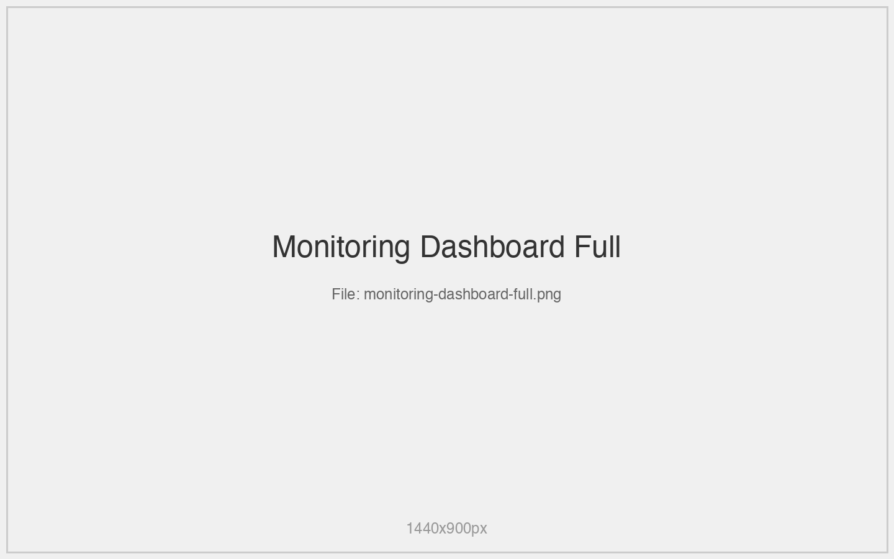
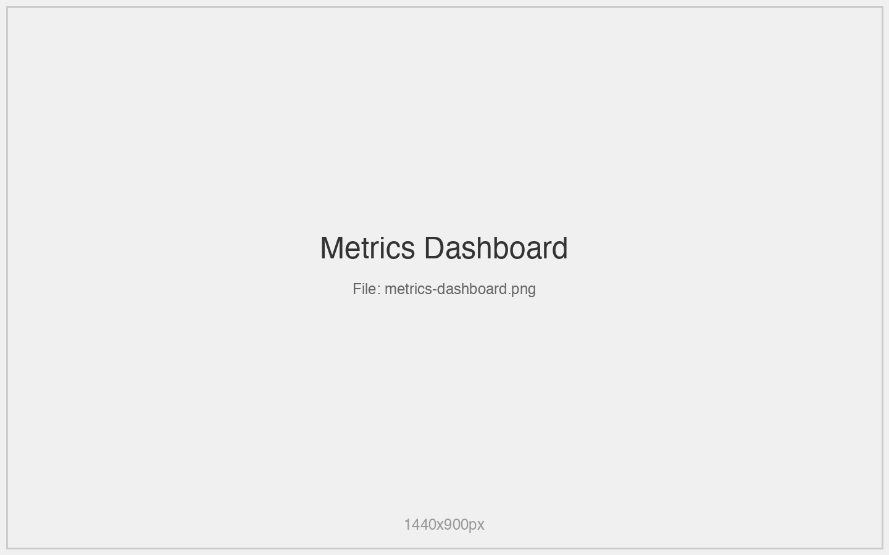
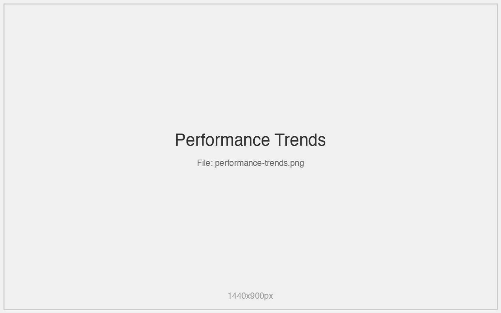
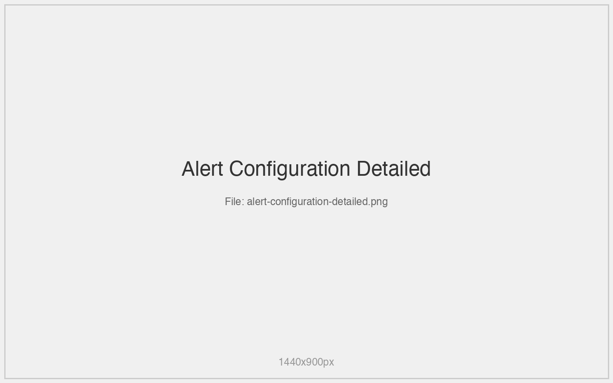
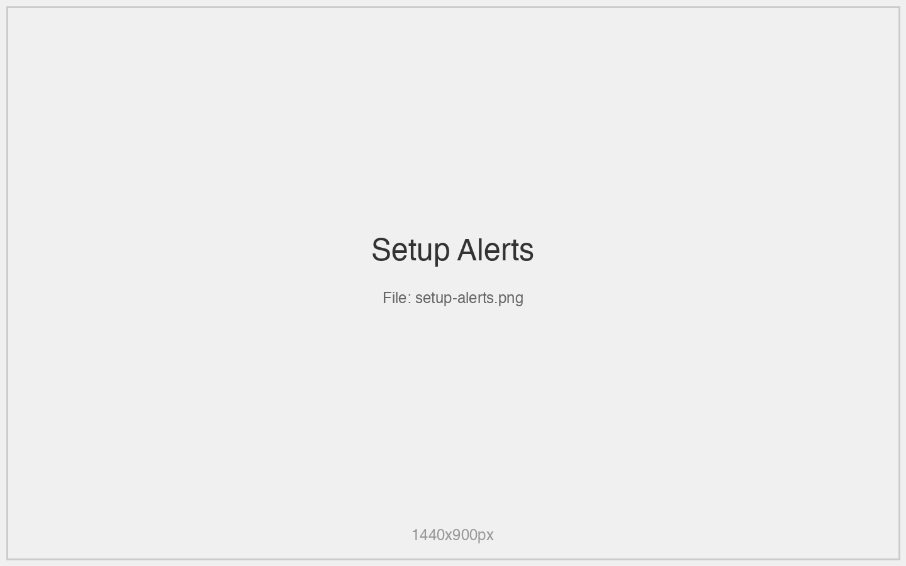
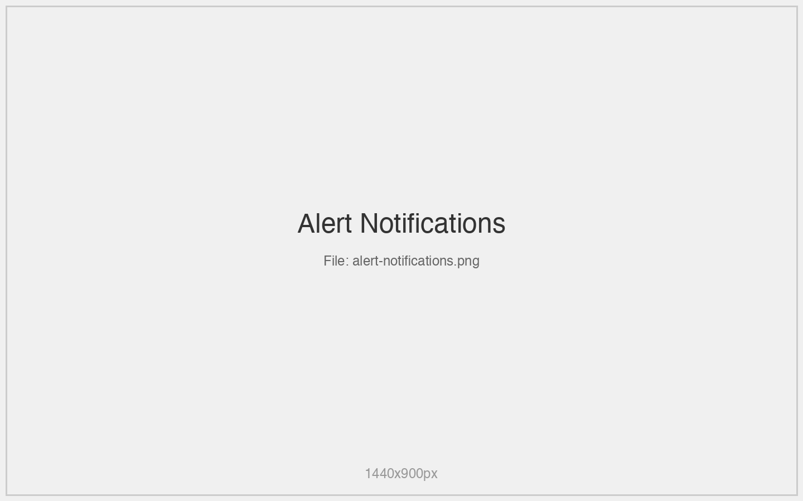

Monitoring & Metrics¶
Real-time monitoring and alerting system integrated with AWS CloudWatch.

CloudWatch Integration¶
Metrics Dashboard¶
- Real-time performance metrics
- Interactive charts using native SwiftUI Charts
- Multiple time ranges (1h, 6h, 24h, 7d)
- Automatic refresh every 60 seconds

Supported Metrics¶
- Capacity Metrics: Read/Write capacity utilization
- Performance Metrics: Latency, throttling events
- Error Metrics: User errors, system errors
- Storage Metrics: Item count, table size
Interactive Charts¶
Chart Types¶
- Line charts for trend analysis
- Area charts for cumulative metrics
- Bar charts for discrete events
- Combo charts for correlated metrics
Chart Features¶
- Zoom and pan capabilities
- Data point hover information
- Export to image formats
- Time range selection
Visual Indicators¶
- Trend arrows with color coding
- Threshold breach highlights
- Performance status badges
- Capacity utilization warnings

Metric Alerts¶
Alert Configuration¶
- Configurable thresholds for all metrics
- Multiple severity levels (Info, Warning, Critical)
- Custom alert names and descriptions
- Flexible time windows


Alert Types¶
- Threshold Alerts: Trigger when metric exceeds limit
- Trend Alerts: Detect unusual patterns
- Composite Alerts: Multiple condition combinations
- Anomaly Detection: Machine learning-based alerts
Notification System¶
- Native macOS notifications
- Visual alert banners in dashboard
- Alert history and acknowledgment
- Escalation procedures

Performance Monitoring¶
Capacity Tracking¶
- Read/write capacity utilization
- Auto-scaling recommendations
- Cost optimization suggestions
- Burst capacity monitoring
Latency Analysis¶
- Request latency percentiles
- Regional latency comparison
- Operation-type breakdown
- Historical trend analysis
Error Monitoring¶
- Error rate tracking
- Error type categorization
- Root cause analysis hints
- Recovery recommendations
Alert Management¶
Alert Dashboard¶
- Active alerts overview
- Alert severity distribution
- Recent alert history
- Acknowledgment status
Alert Actions¶
- Acknowledge alerts
- Snooze notifications
- Edit alert thresholds
- Disable/enable alerts
Alert History¶
- Complete alert timeline
- Resolution tracking
- Performance impact correlation
- Trend analysis
Monitoring Best Practices¶
Threshold Setting¶
- Start with conservative thresholds
- Adjust based on normal usage patterns
- Account for traffic spikes
- Consider business impact
Alert Fatigue Prevention¶
- Use appropriate severity levels
- Implement alert suppression
- Group related alerts
- Regular threshold review
Performance Optimization¶
- Monitor capacity trends
- Identify bottlenecks early
- Plan for growth
- Optimize query patterns
Custom Dashboards¶
Dashboard Creation¶
- Drag-and-drop metric selection
- Custom time ranges
- Layout customization
- Save and share dashboards
Widget Types¶
- Single metric displays
- Comparison charts
- Status indicators
- Custom calculations
This is a stub - full documentation will be generated from project source